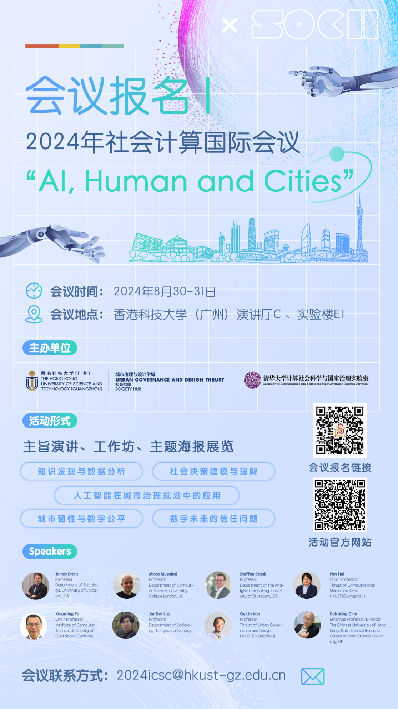

Welcome
The 2024 International Conference on Social Computing is a significant event that brings together experts from various fields to explore the intersection of artificial intelligence, human behavior, and urban development. Here's an overview of the conference:
1. Objectives
- To foster academic exchange and discussion on the role of AI in societal and urban contexts.
- To promote interdisciplinary research and collaboration in the field of social computing.
- To enhance understanding of AI's impact on social decision-making, urban resilience, and digital trust.
2. Themes
The central theme of the conference is "AI, Human and Cities," which encompasses a wide range of sub-themes including:
- Knowledge discovery and data analysis.
- Social decision modeling and understanding.
- Urban resilience and digital equity.
- Urban form and social innovation.
- Applications of AI in urban governance and planning.
- Trust issues in the digital future.
3. Key Highlights
- Keynote Speeches: Renowned experts will deliver speeches on topics that address the latest developments and challenges in the field.
- Academic Poster Exhibition and Competition: Participants can showcase their research through posters, with a chance to win awards based on various criteria such as research content and poster design.
- Workshops: Interactive sessions focusing on smart community building, geospatial data analysis, and the application of large language models in urban studies, providing hands-on experience and insights.
- Distinguished Speakers and Participants: The conference will feature presentations from both international and domestic scholars, ensuring a diverse and comprehensive perspective on the issues.
This conference aims to be a pivotal platform for scholars and professionals to share insights, discuss challenges, and shape the future of social computing in the context of AI and urban environments.
